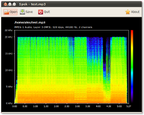
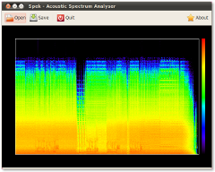

Spek (IPA: /spɛk/, ‘bacon’ in Dutch) helps to analyse your audio files by showing their spectrogram.
|
 |  |
| Spek showing the spectrogram of a FLAC file. | The same sound file encoded as a 320kbps MP3. | 320kbps transcoded to -V2 MP3. Don't do that! |
Spek 0.2 for Windows (x86 MSI installer, 17.1 MiB)
Spek 0.2 for GNU/Linux (source code tar.bz2, 188 KiB)
To install on Windows just download and double-click the MSI installer. After asking a few questions, Spek will install automatically.
To build and run on GNU/Linux:
$ tar -xjvf spek-0.2.tar.bz2 $ cd spek-0.2 $ ./configure $ make $ src/spek
Or `sudo make install` to have it installed.
Software requirements: GTK+ ≥ 2.14, GStreamer ≥ 0.10.17 (including gst-plugins-base and gst-plugins-good). For MP3 support you also need gst-plugins-ugly.
Features planned for the 1.0 release:
Spek is free and open source software licensed under GNU GPLv3. The project is written in Vala, the code is hosted on Gitorious. Patches can be sent by email or as Gitorious merge requests.
Report bugs and request new features here.
Spek is maintained by Alexander Kojevnikov, you can contact him by email.
{kind=link}
{kind=link}